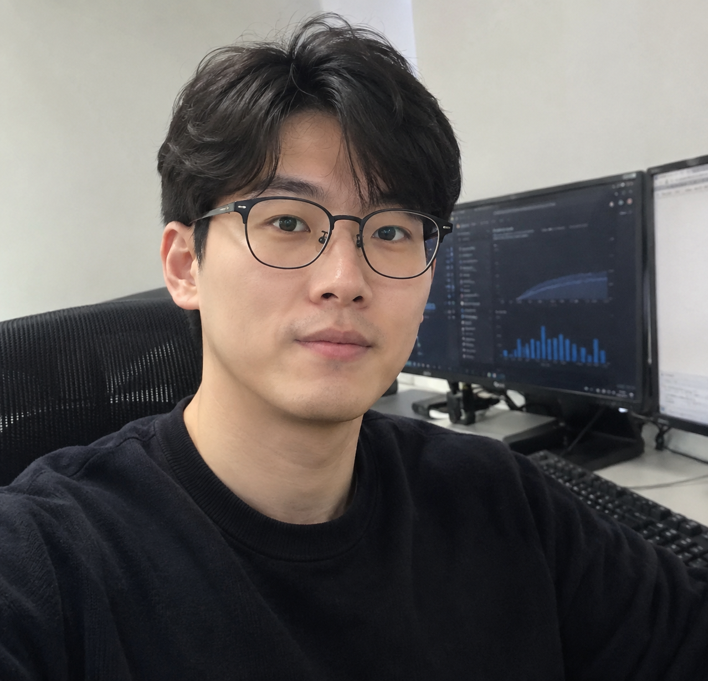
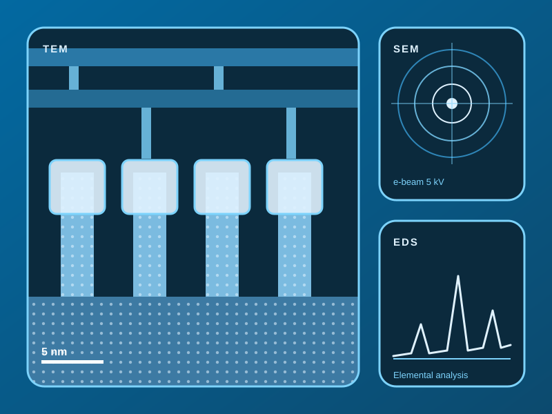

Analysis Equipment
- TEM
- SEM
- FIB
- EDS
I’m a semiconductor engineer with 9 years of experience in the semiconductor industry.


About Me
I'm a semiconductor engineer specializing in material analysis. For 9 years, I have used TEM and SEM to examine device structures at the nanometer scale, helping teams understand process results, find the root cause of defects, and make confident engineering decisions based on data.
Experience
2023 – Present
Lead TEM and SEM cross-section analysis for advanced logic devices, identify the root cause of process defects, and report findings to process and design teams.
2020 – 2023
Performed TEM and SEM analysis to support yield improvement and new process development, and shortened the analysis turnaround time by improving the sample preparation workflow.
2017 – 2020
Started my career in the failure analysis lab, learning sample preparation and SEM imaging, and supporting daily analysis requests from device and process engineers.
The companies and career details above are fictional and created for demonstration purposes only.
Skills
Contact
If you have any questions about my experience or career, feel free to reach out. I will get back to you as soon as I can.
chungs9192@gmail.com